王 晓阳
2019级网络工程01班
Sunbreak@email.com
在网工,我本是一个平凡的学生,学习上不是很优异,我平时就是学习了一些爱好的技术.我还算得上对自己人生有目标的学生.
我的座右铭是踏踏实实才是王道!
在网工,我本是一个平凡的学生,学习上不是很优异,我平时就是学习了一些爱好的技术.我还算得上对自己人生有目标的学生.
我的座右铭是踏踏实实才是王道!
计科，计算机科学与技术的简称，它偏向于软件开发、设计。网工，网络工程的简称，它偏向于网络技术。两者专业最明显的特色。
因为计算机科学与技术在大三使用电脑属于高峰期状态，课上多是使用奥多比软件全家桶（Adobe），比如说PS、AI、An、3dsmax、CAD、DW等等。对电脑配置要求较高，办公笔记本的同学，做好心理准备，一旦遇到意外，因崩溃缘故把作业没了，恭喜恭喜，中奖了，我没办法挽回~ 马上要大三的同学，玩大型游戏的，别想了！想玩可以，你的电脑准备上路~。
网络工程专门研究的是网络，多使用网络软件，比如H3C、思科、拓扑网络。别看这多复杂，多枯燥，实际上被双眼蒙蔽了，其实网络技术很简单。对电脑配置要求不高。办公笔记本，游戏本都可以应付。
计算机科学与技术和网络工程的课程时间分配和作业量几乎是成正比。但是计科比网工稍微多了一些。
计算机与科学技术应用专业
优点：计算机技术非常广泛，想学什么都有。
缺点：教学不够深，需要自己去深度挖掘！
只要功夫深，您的向往基本都可以实现。
网络工程
优点：网络工程专业很专一。
缺点：教学不够深，需要自己去深度挖掘！
需要您去多多实践。
大二的我，我第一个选择了是计算机科学与技术应用，正是因为专业十分广泛，计科有了关于计算机的设计方向，大概是这个原因很诱人。可能原因是，我不是很擅长编程开发，比如算法（排序，选择排序，指针，函数，继承与派生，数据结构等等），逻辑表达之类，都是因为C语言受了折磨，打退堂鼓。后来，我了解计科和网工专业，我在大一、大二时候提前学了PS、CAD、AI、Pr剪辑缘由，凡是选择计科的话，确实大大浪费了一些时间。因为啊，PS、AI、CAD等等是生活中必备技术知识。
最后，计科和网工，其实都有关于编程开发课程，别想【躲过初一，躲不过十五】。我只想尝试新鲜的东西原因，选择了网络工程。我待在网络工程大约1年吧！整体感觉十分良好，大概是因为有空余时间可以去做喜欢的事。我想，如果您选择了网工，也可以自主学习设计方向。其实大学啊，非常自由的。
 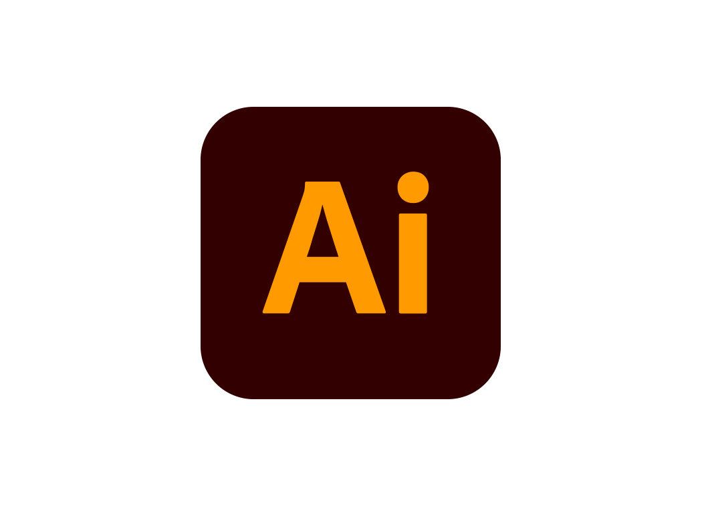
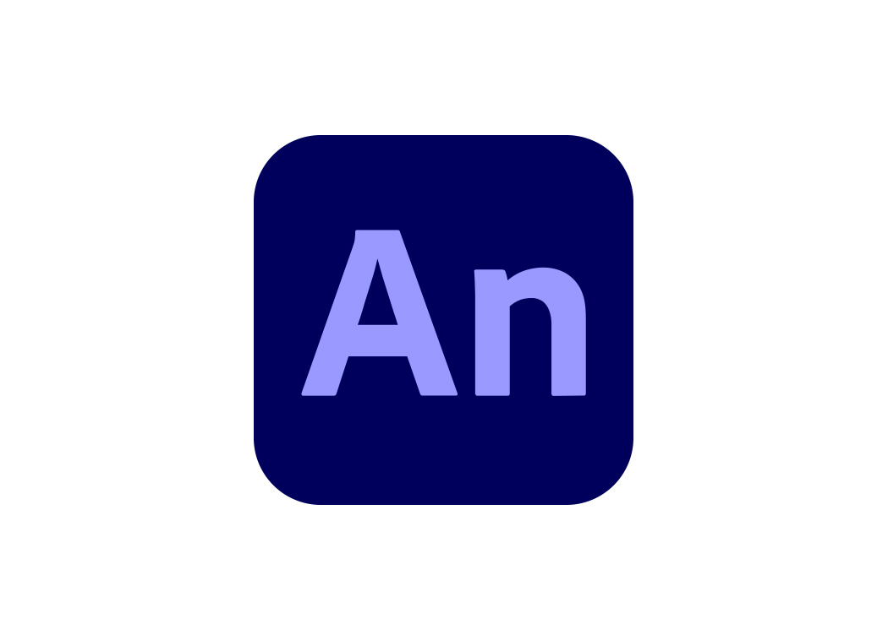
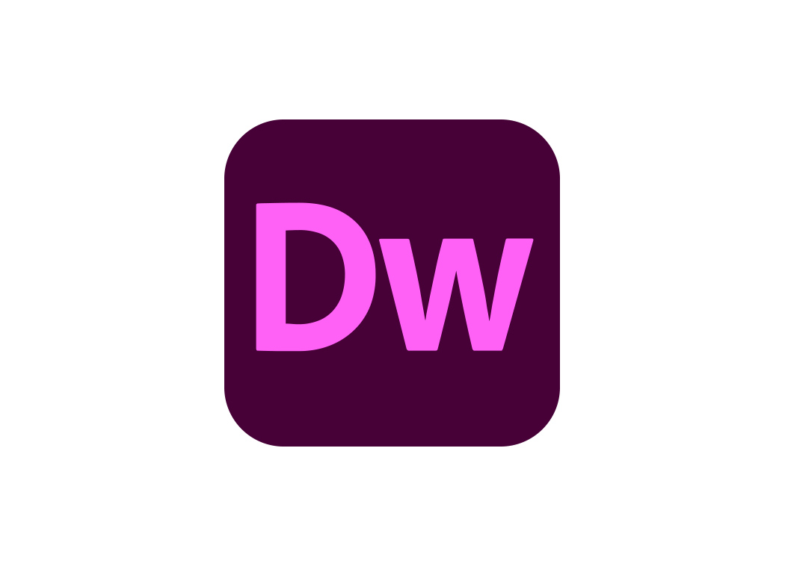
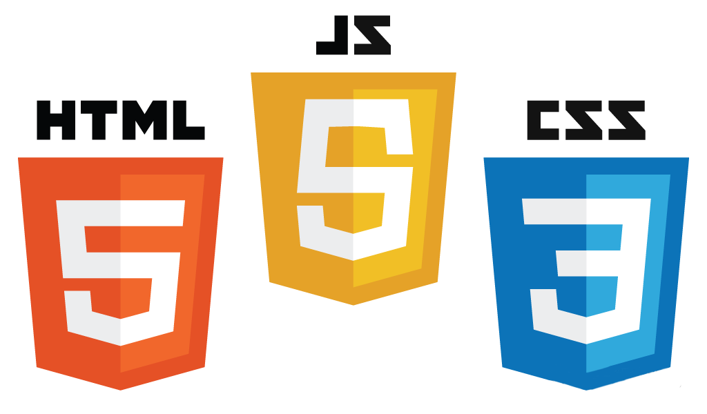
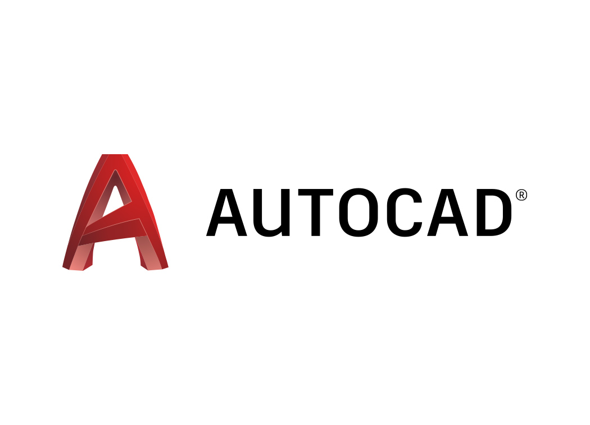
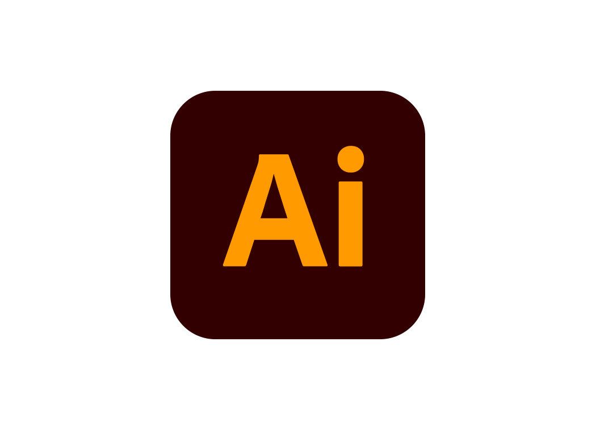
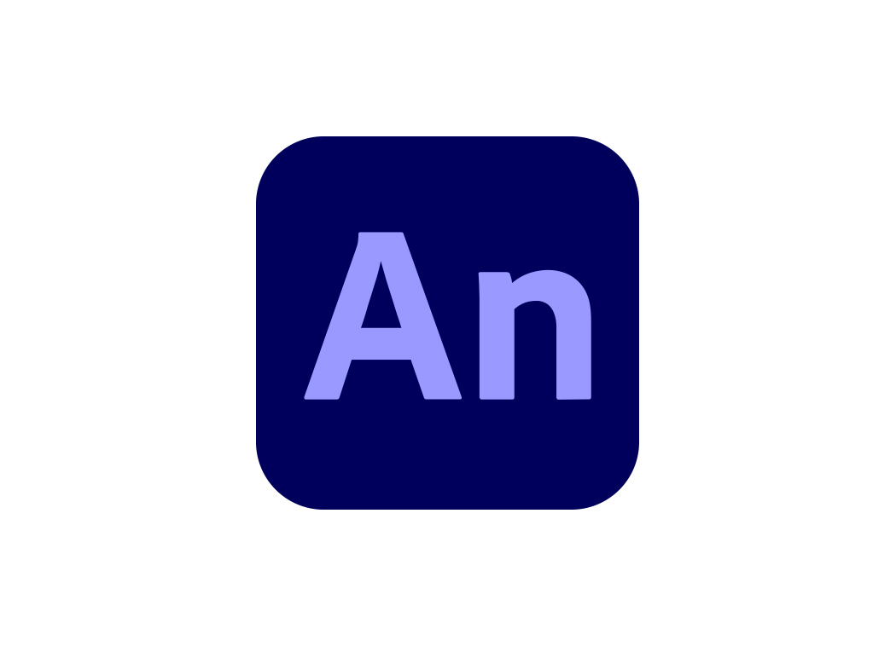
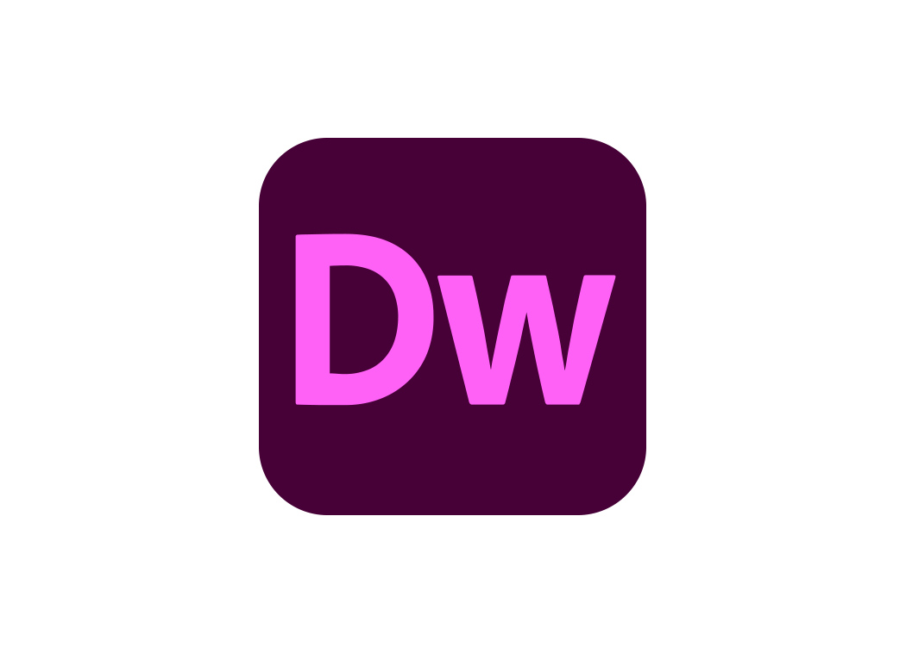
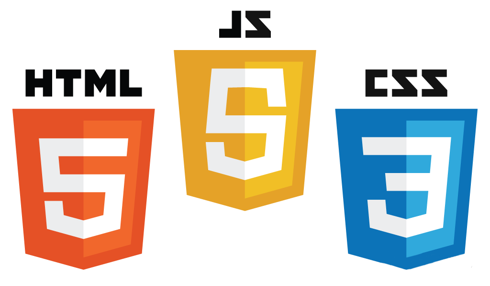
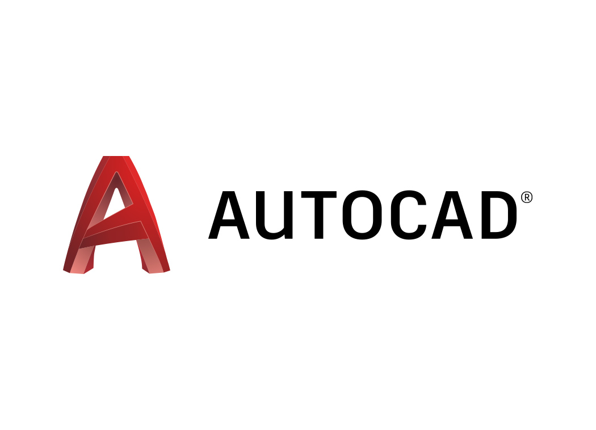

 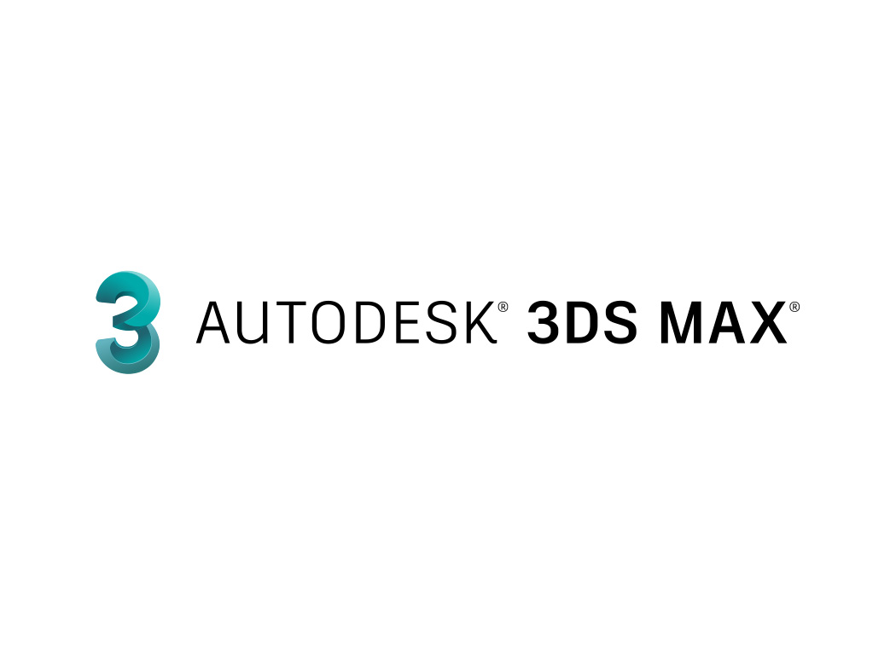
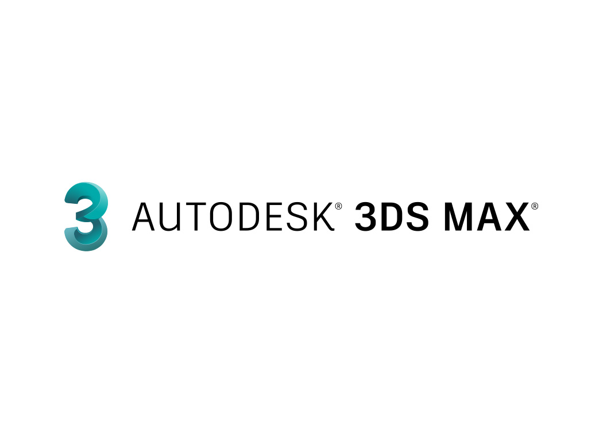
设计方向软件:PS、AI、An、CAD、Bootstrap-v4
编程开发软件:VScode、VS studio、Idea、Pycharm
网络工程软件:Cisco、H3C、eNPS
操作系统软件:window10、Linux
我带大家简单看看有趣的关于网络安全的实验,它啊,初步状态,本身不需要更多的算法,只需要制造恶意脚本,攻破一些网络,获取密码.就是这个例子.
那我先带大家如何使用Python代发邮箱,然后搞得把病毒发一下,利用社会工程学欺骗对方,下载,然后远程控制对方笔记本.